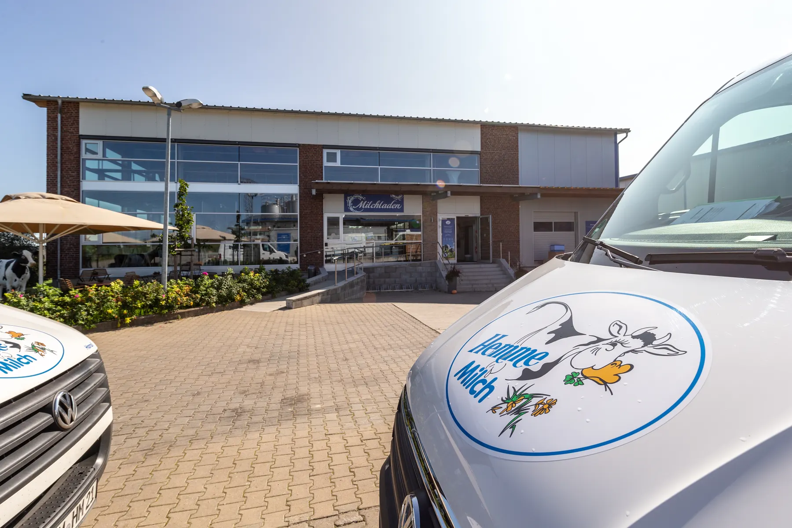
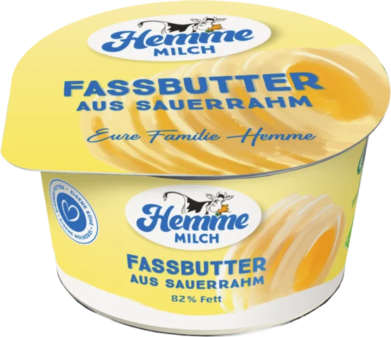
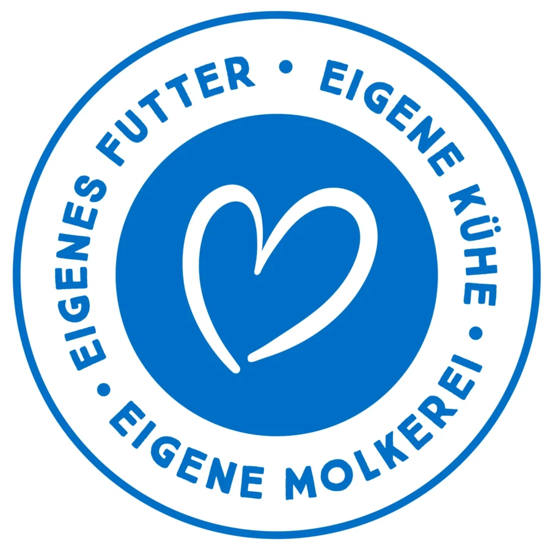
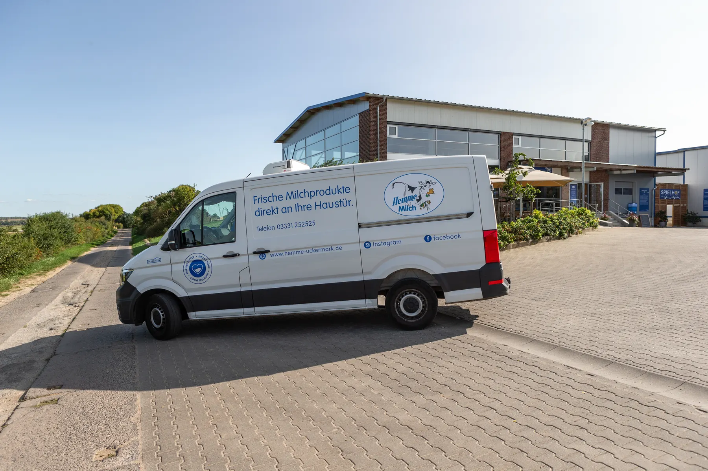
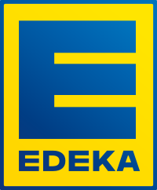
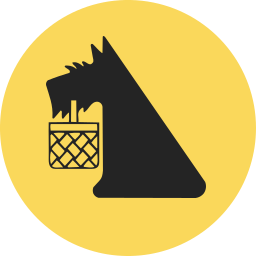
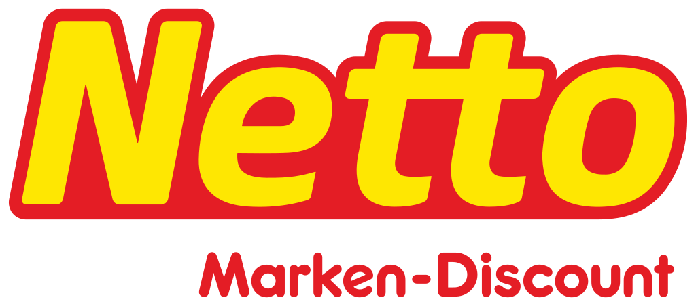
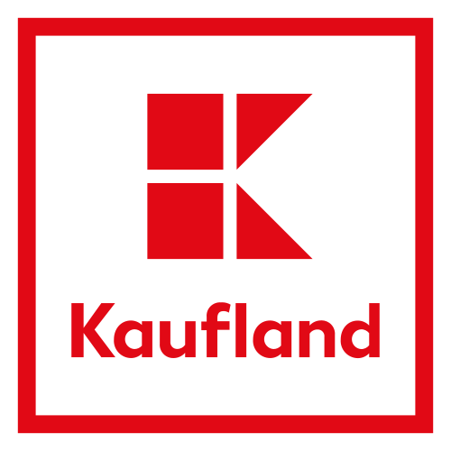
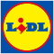
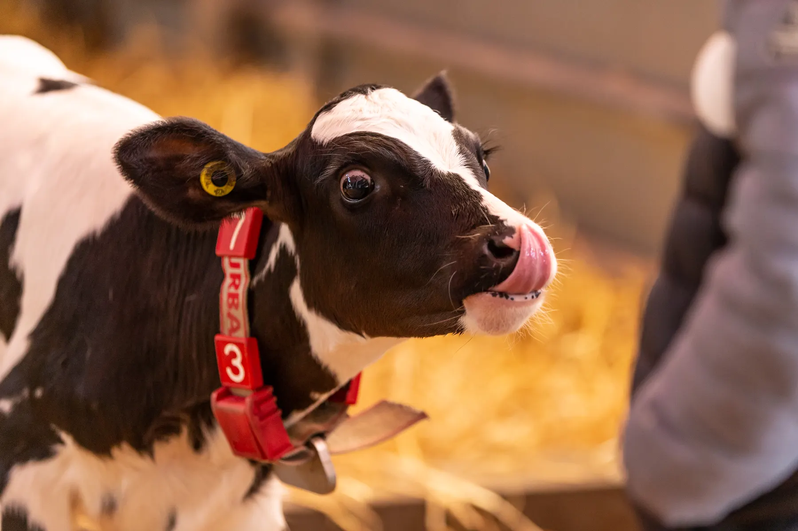

- Startseite
- Für Gastro & Handel
Milchmann-Service
Frische Milch für Theke und Regal
Hemme Milch beliefert Regionalläden, Restaurants, Hotels, Kantinen und Schulen in Berlin und Brandenburg und ist im Lebensmittelhandel gelistet. Bestellung, Tourenplanung und Auslieferung machen wir selbst.



Auf einen Blick
Hemme Milch beliefert Gastronomie, Großverbraucher und Handel in Berlin und Brandenburg mit eigenem Milchmann-Service. Für Großverbraucher gibt es eigene Gebinde: Sahne, Joghurt, Quark und Fassbutter im 5‑Kilogramm-Eimer, Fassbutter im 12‑Kilogramm-Block und Milch im 10‑Liter-Schlauchbeutel. Im Lebensmittelhandel ist Hemme Milch in Berlin und Brandenburg bei EDEKA, REWE, Kaufland, Netto, Netto Marken-Discount, Penny und Lidl gelistet, in Mecklenburg-Vorpommern bei EDEKA und REWE, in Thüringen und Sachsen bei REWE.
- Eimer für Sahne, Joghurt, Quark und Butter
- 5 kg
- Milch im Schlauchbeutel
- 10 Liter
- Fassbutter im Block
- 12 kg
- Bestellung bis Auslieferung
- Eigene Touren
Der Milchmann-Service
Mit unserem Milchmann-Service liefern wir frische Milchprodukte direkt an Läden, Cafés, Bäckereien und Eisdielen. In Brandenburg ist dieser Direktservice einmalig.
- Eigene Bestellannahme, eigene Tourenplanung, eigene Auslieferung
- Frisch aus der eigenen Molkerei, ohne Zwischenhändler
- Für Regionalläden, Gastronomie, Hotels, Kantinen und Schulen

Unser Sortiment für Großverbraucher
5kg
Im Eimer
Für Küche, Konditorei und Frühstücksbuffet.
- Sahne
- Naturjoghurt
- Fruchtjoghurtverschiedene Sorten
- Quark
- Fassbutter
12kg
Fassbutter im Block
Aus natürlich gesäuertem Rahm, mit vollsahnigem Aroma. Für Bäckereien und Gastronomie.
14 Tage haltbar10Liter
Milch im Schlauchbeutel
Frische Milch für Kaffeespezialitäten in Cafés und Gastronomie.
10 Tage haltbar600ml
Milchgetränke
- Schoko- und Vanillemilchdas ganze Jahr
- Eiskaffee und ErdbeermilchApril bis Oktober
230ml
Milchgetränke to go
- Schoko, Vanille, Eiskaffeedas ganze Jahr
- ErdbeermilchApril bis Oktober
1Liter
Milch, Buttermilch, Joghurt
- Frische Milch1 Liter
- Buttermilch600 g
- Naturjoghurt600 g
Vom 5‑Kilogramm-Eimer für Küche und Konditorei bis zum 230‑ml-Becher für die Kühltheke: Alles kommt frisch aus unserer eigenen Molkerei und wird von uns selbst ausgeliefert. Erdbeermilch und Eiskaffee im 600‑ml-Beutel gibt es in der Saison von April bis Oktober.
Für den Handel


Netto


In Berlin und Brandenburg ist Hemme Milch bei EDEKA, REWE, Kaufland und Netto gelistet, die Vollmilch auch bei Netto Marken-Discount, Penny und Lidl. Dazu kommen viele regionale Läden. In Mecklenburg-Vorpommern führen EDEKA und REWE unsere Produkte, in Thüringen und Sachsen REWE. Im Mai 2025 war eine Delegation der REWE-Region Ost zu Gast und hat sich die ganze Kette angesehen: die Aufzucht der Futterpflanzen, die Haltung der Milchkühe, die schonende Verarbeitung und die Qualitätssicherung bis zum fertigen Produkt.
Vom ersten Saatkorn bis zum Endprodukt im Kühlregal bieten wir vollständige Transparenz.
Fragen von Gastro und Handel
Eure Frage ist nicht dabei? Ruft uns an oder schreibt uns.

Was ist der Milchmann-Service?
Hemme Milch liefert frische Milchprodukte selbst direkt an Läden, Cafés, Bäckereien und Eisdielen. Bestellannahme, Tourenplanung und Auslieferung liegen in eigener Hand. In Brandenburg ist dieser Direktservice einmalig.
Welche Großgebinde gibt es?
Im 5‑Kilogramm-Eimer gibt es Sahne, Naturjoghurt, Fruchtjoghurt in verschiedenen Sorten, Quark und Fassbutter. Dazu Fassbutter im 12‑Kilogramm-Block und frische Milch im 10‑Liter-Schlauchbeutel.
Außerdem liefern wir Milch im 1‑Liter-Beutel, Buttermilch und Naturjoghurt im 600‑Gramm-Becher und unsere Milchgetränke in 600 und 230 Millilitern.
Welche Milchgetränke gibt es das ganze Jahr?
Schoko- und Vanillemilch in 600 und 230 Millilitern und Eiskaffee to go mit 230 Millilitern. Eiskaffee im 600‑ml-Beutel und Erdbeermilch gibt es von April bis Oktober.
Wen beliefert Hemme Milch?
Regionalläden in Brandenburg und Berlin, Restaurants, Hotels, Kantinen und Schulen, dazu Supermärkte der Region und Discounter.
Wie lange sind die Produkte haltbar?
Frische Milch 10 Tage, Schokomilch 12 Tage, Vanillemilch, Eiskaffee, Joghurt, Fassbutter und Buttermilch 14 Tage.
Lasst uns sprechen
Anfrage für Gastro & Handel
Ruft uns an unter 03331 252525 oder schreibt uns über das Kontaktformular.